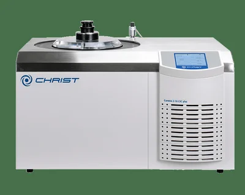
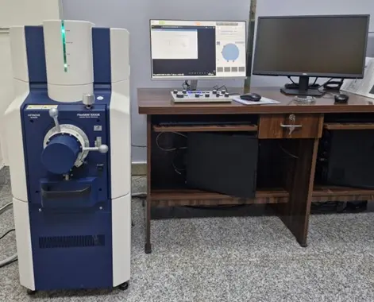
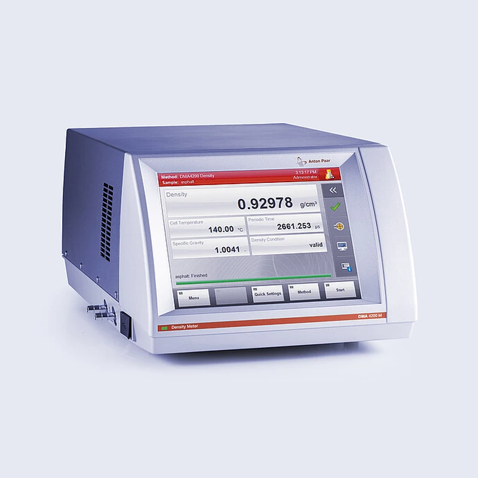
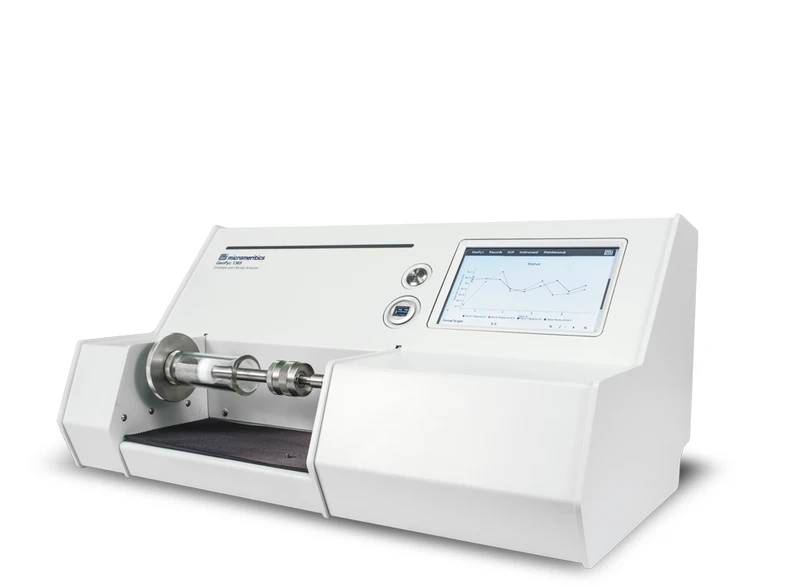
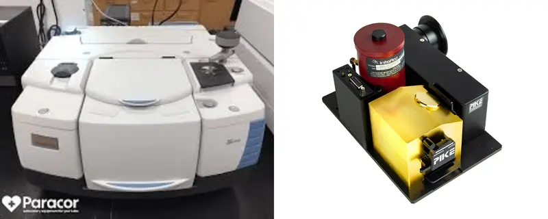

Research Facilities
Explore our state-of-the-art laboratory infrastructure equipped for advanced synthesis, precise characterization, and multi-scale material analysis.

Supercritical CO₂ Dryer
Critical for aerogel synthesis, this system extracts solvents to preserve the monolith structure with high porosity and minimal shrinkage.

Vacuum Lyophilizer
High-precision freeze-drying system for structural preservation. Used in creating hierarchical pore structures through controlled ice sublimation.

Hitachi FlexSEM 1000 + EDS
A compact scanning electron microscope utilizing a tungsten filament electron gun for morphology and elemental analysis. Features a specialized detector for rapid characterization of diverse material surfaces.
Trident Thermal Conductivity Meter
High-precision system for accurate thermal conductivity measurement across a wide range of materials with minimal sample preparation.
Gas Pycnometer
High-precision instrument for true (skeletal) density measurement using gas displacement. Features automatic pressure control and rapid analysis with minimal sample preparation, making it suitable for powders, solids, and porous materials.

Liquid Density Meter (DMA)
High-precision instrument providing rapid and accurate liquid analysis for research and quality control applications.

Impedance Tube
Precision instrument used to measure normal incidence sound absorption, reflection, and acoustic impedance using the transfer function method. Utilizes high-sensitivity microphones with digital signal processing and includes integrated data acquisition for characterizing porous, fibrous, and aerogel-based materials.

GeoPyc 1365 Envelope Density Analyzer
Bench-top instrument designed for precise determination of envelope volume and density of solid samples. Features automated analysis, touchscreen control, non-destructive measurement, and optional T.A.P. mode for bulk density evaluation.

Thermo Scientific FTIR with Integrating Sphere
Advanced Fourier Transform Infrared (FTIR) spectrometer equipped with an integrating sphere accessory for highly accurate diffuse reflectance and transmittance measurements of solid, liquid, and powder samples.

Planetary Ball Mill
High-energy mechanical milling for homogeneous particle size reduction and reactive blending of chemical precursors.